病室のお食事はとても美味しいの巻。
町立八丈病院のご飯を何度も食べたことがあるが文京区千駄木の日本医科大学附属病院のお食事は比較にならない程美味しすぎます。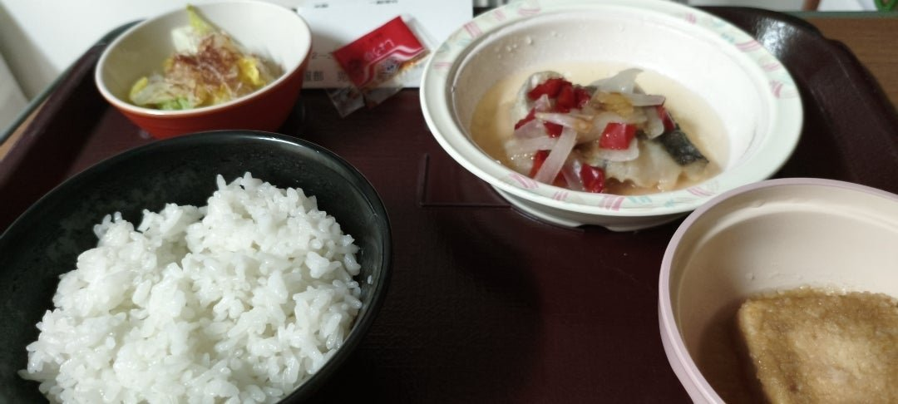
選択食なので好きなメニューを選べるし味付けもちゃんとしていて塩分もシッカリ感じられ味付けもとても良いですし使用している材料もとても良いです。
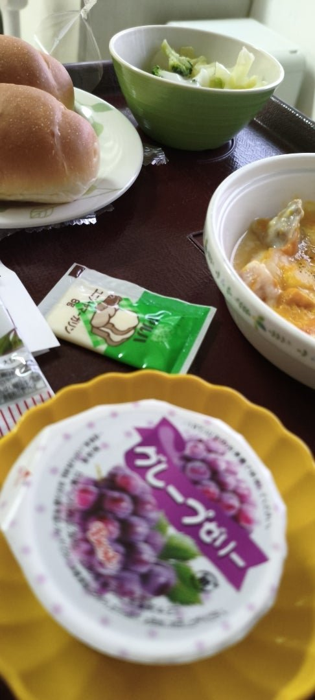
僕は朝はパン派なので無条件でパンを食べてます。食パン、ロールパン等の種類もあり飽きません。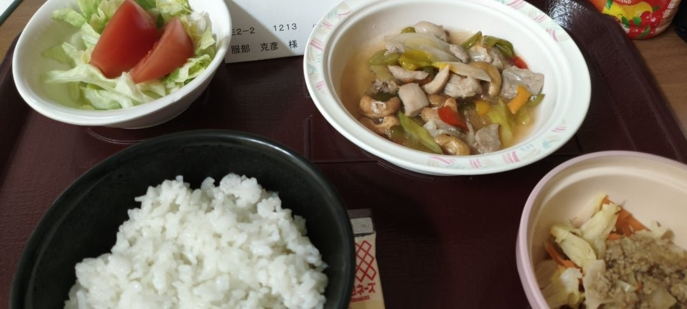
昼のカシューナッツは喉につかえてむせましたが味はとても良いです。中華料理をやっていたので作り手の苦労も分かりますしちゃんとしたメニューでとても嬉しかったです。
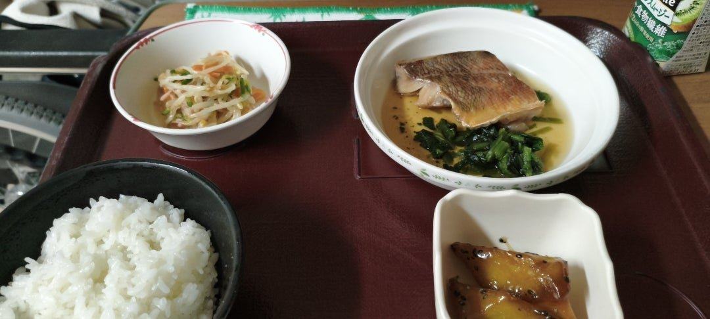
お野菜もしっかり摂れているのでお通じも良くなりました。
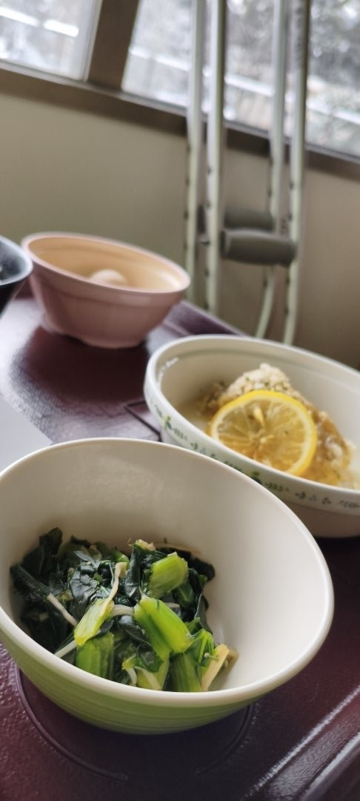
基本的には薄味ですがメイン料理はしっかりとした味付けです。
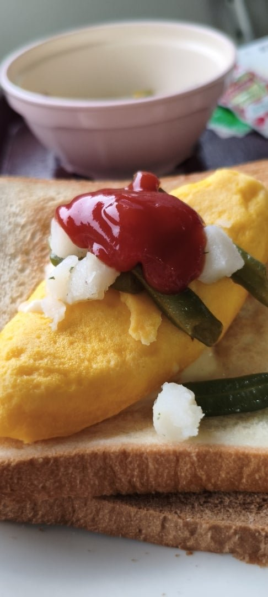
パンに何挟む？毎回楽しまさせて頂いております。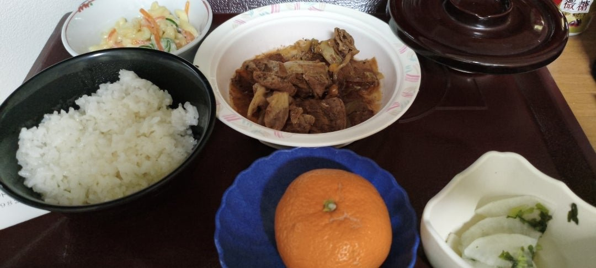
お肉もお魚も出ますしフルーツやデザートも付いています。
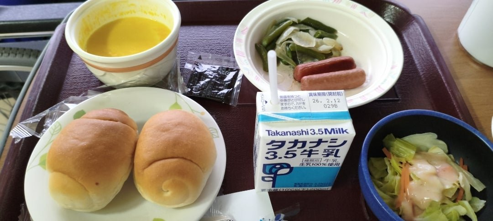
家出は飲まない牛乳も好きになりました。
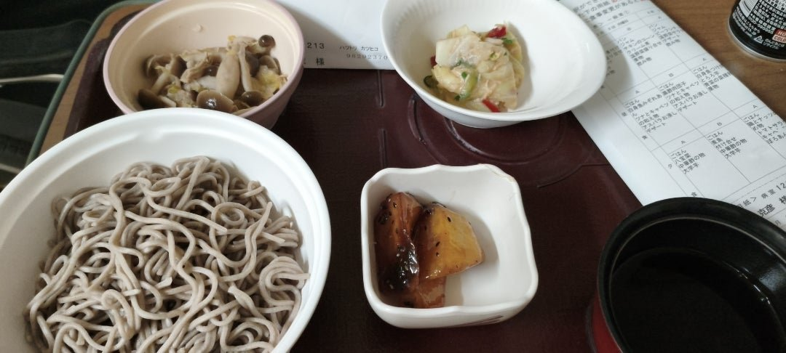
麺類も豊富です。うどんや蕎麦、パスタや中華麺も‼️
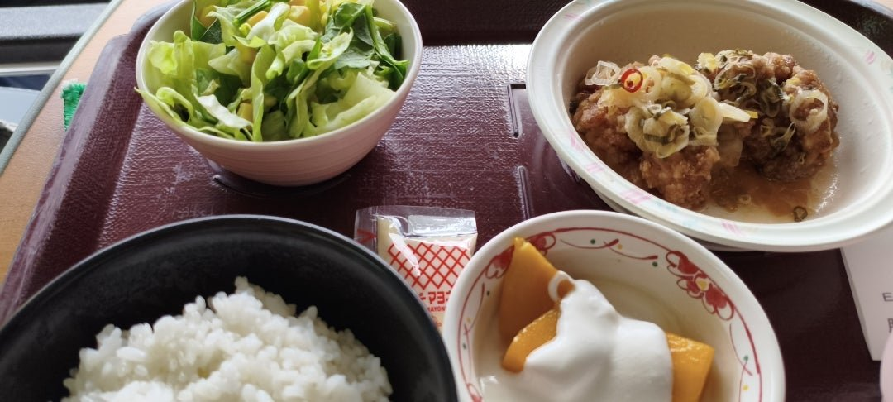
油淋鶏には驚きました八丈島ではありえませんね⁉️
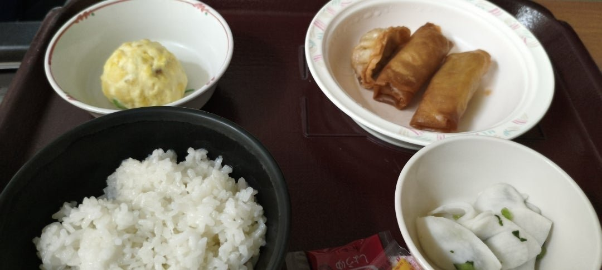
春巻きや焼売、餃子の点心まで出ます。
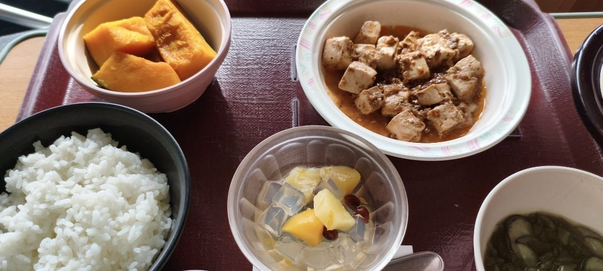
麻婆豆腐美味しかったです。
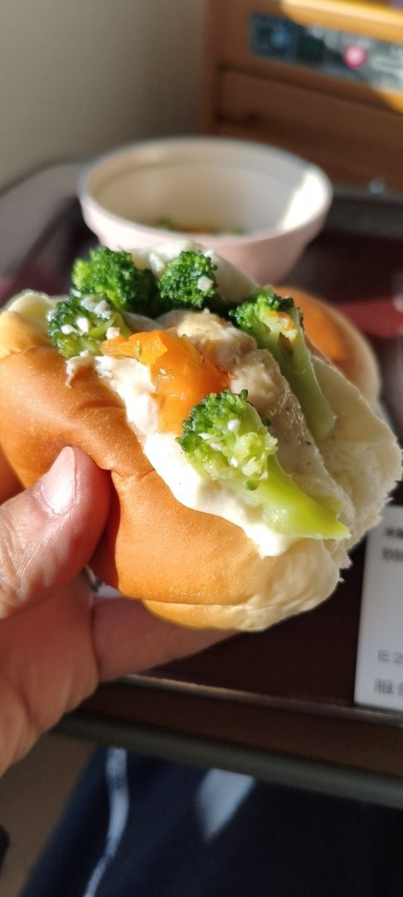
ロールパン焼いたり焼かずにサンドしたりバリエーション豊かでした。
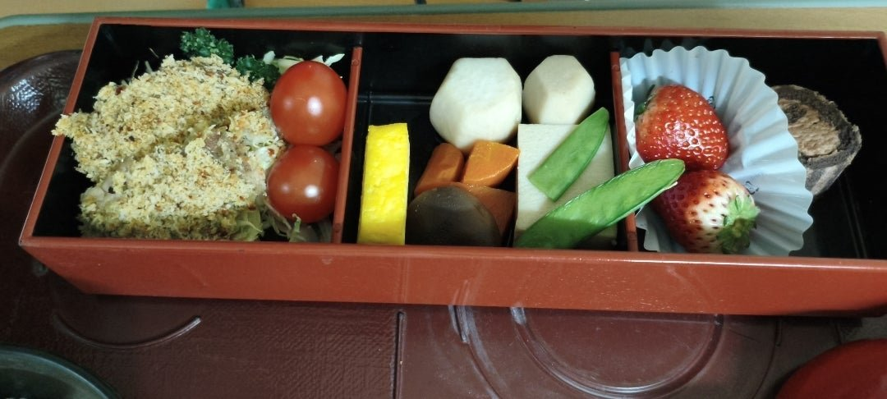
季節の心こもったお料理も何度か出ました。節目には嬉しいですね⁉️
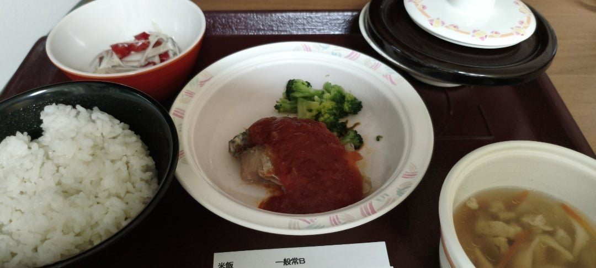
ハンバーグ最高でしたよ！プロですね⁉️
また入院して食べたくなるメニューが沢山ありました。
エレベーターなどでワゴン車を運んてくださる調理担当の方々には会う度にありがとうございましたとお礼を言います。美味しかったです！ってちゃんと伝えてますよ！
いつもありがとうございました😊
※ この記事はアメブロからの移行記事です（原文はこちら）